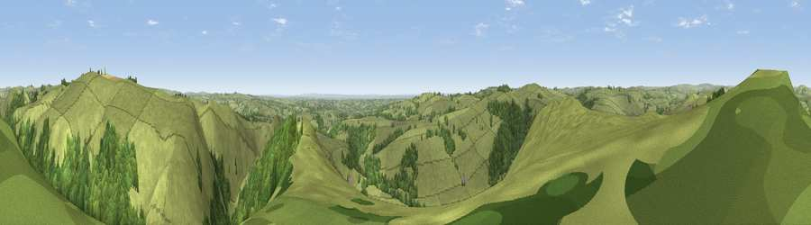

Viewpoint near Ilam
#7824 in England · top 4% of its area beats it · near Ilam · access?Where it is
The exact computed spot (SK 14212 51625). Click the marker for map links.
Public access: no public right of way or access land is recorded at this exact spot — it may be on private land. Computed from Natural England's CRoW access layer and OpenStreetMap rights of way — not the legal definitive map. Always verify locally.
The view, rendered

A 360° render of this exact spot computed from the terrain model, tree cover and land cover — summer colours, afternoon light, calibrated against photographs of famous viewpoints. Real trees, hedges and buildings will differ in detail.
The panorama
Grey silhouette: terrain skyline in each direction (720 bearings, Earth curvature and refraction included). Dashed green: skyline with trees (+15 m) and buildings (+8 m) as obstacles. Blue strip: how far the ground is visible on each bearing.
Where the view opens
Wedge length = distance to the farthest visible ground on that bearing (vegetation-aware). Rings at 10, 25 and 50 km.
What fills the view
60% grassland · 39% woodland ·
Angular shares of the visible panorama (visual magnitude), not map area. Landscape diversity 0.31 (0–1 Shannon).
Key numbers
More beautiful places nearby
The staircase of upgrades: each row has a higher view potential than everything closer. Driving times are estimates from straight-line distance, calibrated against real road routing — check an actual route before setting out.
| Place | Direction | Drive | Score |
|---|---|---|---|
| Tissington Hill | NE · 1 km | ~4 min | 75.5 |
| Viewpoint near Mow Cop | WNW · 29 km | ~46 min | 78.9 |
| Viewpoint near Mow Cop | WNW · 29 km | ~46 min | 80.2 |
| Viewpoint near Harthill | W · 63 km | ~86 min | 80.5 |
| Viewpoint near Little Wenlock | SW · 67 km | ~90 min | 84.2 |
| The Wrekin | SW · 67 km | ~90 min | 85.0 |
| Viewpoint near Little Wenlock | SW · 67 km | ~91 min | 86.6 |
| North Hill | SSW · 112 km | ~136 min | 86.8 |
53.06169, -1.78938 · source: screening · position refined by local search. Computed location — check access rights before visiting.